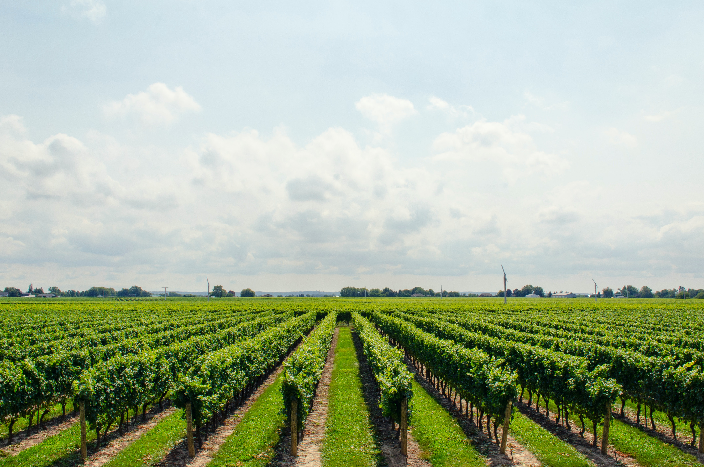

|  |
l'agriculture mondiale en 2050 !L'INRAE s'est penchée en début d'année sur les évolutions probables de l'agriculture mondiale d'ici 2050. En anticipant des évolutions climatiques, des changements de régimes alimentaires et une hausse probable des rendements, l'Institut propose une vue prospective qui mise notamment sur le développement de l'agroécologie en Europe. |
|
Soutenez Les HorizonsL'urgence climatique est là. Les Horizons est un média indépendant qui vous permet de développer votre intelligence écologique : restez informés, anticipez les tendances, découvrez des solutions, comprenez les enjeux. Et réussissons ensemble la transition écologique. |
| mois | jan | fevr | mars | avril | may | jui | juillet | aout | september | october | november | december | total |
| 09 | 15.55 | 14.66 | 20.55 | 22.55 | 18.9 | 23 | 22 | 13 | 29 | 27 | 26 | 28 | 29 |